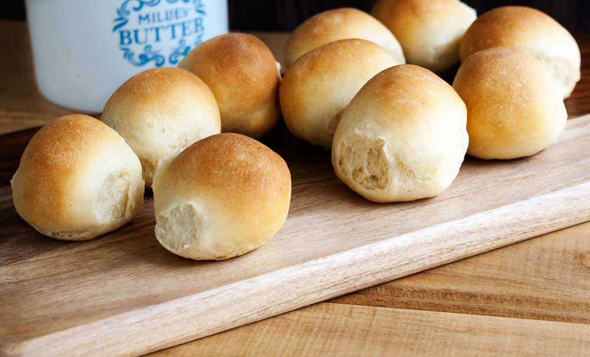

Farouk's balls recipe

Even when this recipe takes some time and is not a easy as other bread recipes,
Farouk's balls are really worth the trouble, .
Round, softs and they fit easily in your hands, Farouk's balls is the best bread I've made,
learn how to make them too!
These are all the ingredients you will need
- 600 gr all-purpose flour.
- 1 individual bag of dry yest.
- 55 gr of vegetable oil, exactly.
- 8 gr of salt.
- 340/360 gr of warm water, add little by little until the dough doesn't stick to the hands.
And here are the steps to make it!
- Mix the dry ingredients together.
- Add the oil, mix a litle more.
- Add half the water, the little by little until the mixture is right.
- Knead 4 to 10 minutes
- Cover it with plastic foild, and leave in a (slighlty) warm place for 3 hours to rise
- Split the dough into 20 or 24 little balls in an oven tray, they should be touching Between them.
- Leave an additional hour to rise a little more.
- Bake for 20 to 30 minutes at medium heat.
- Thats it!
Get back